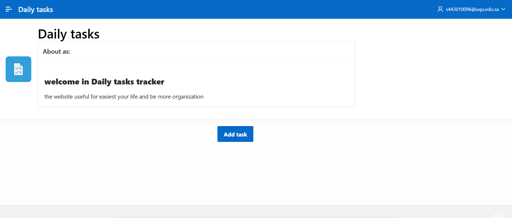
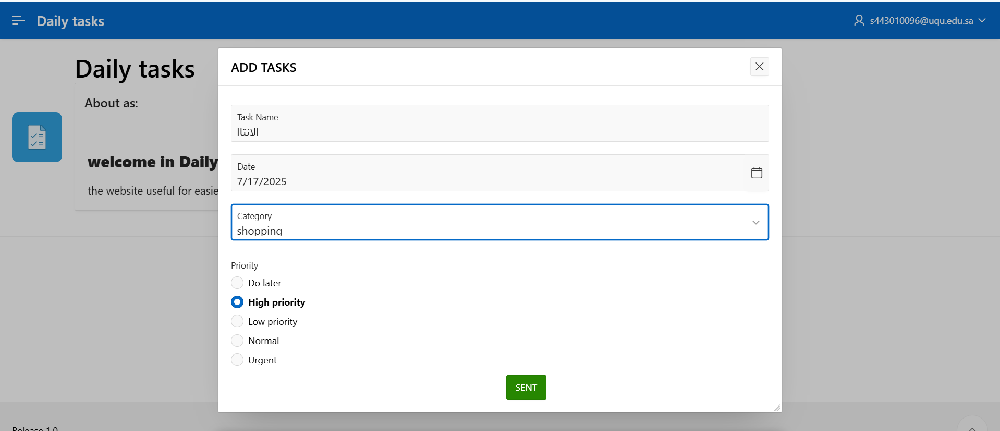
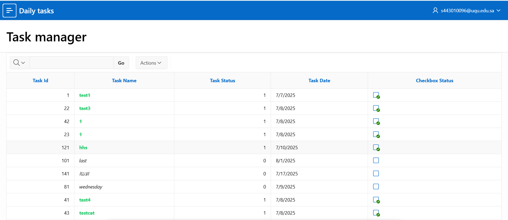

<div class="load-data">
    <div class="popup-main-content">
        <div class="container">
            <div class="row">
                <div class="col-md-12">
                    <div class="portfolio-details-title">
                    <h2>Daily Tasks - Task Management Web Application</h2>
                    </div>
                    <!-- /portfolio-details-title -->
                </div>
                <div class="col-lg-6">
                    <div class="portfolio-details-info p-0 border-0">
                        <div class="tags"><span>Client : </span> Training Project</div>
                        <div class="tags"><span>Category : </span> Web Application</div>
                        <div class="tags"><span>Date : </span> 9 Julay 2025</div>
                        <div class="tags"><span>Website: : </span><a href="https://apex.oracle.com/pls/apex/r/warif/daily-tasks/login?session=14763955560448" target="_blank" rel="noopener noreferrer" class="text-success"> Daily tasks</a> </div>
                    </div>
                    <!-- /portfolio-info -->
                </div>
                    <!-- /portfolio-info -->
                 <div class="col-lg-12"><!-- انا حطيتو -->
                    <p class="portfolio-description mt-30"><strong>Daily tasks </strong>is a fully responsive web-based task management application that I independently designed and developed using Oracle APEX.  
            The system is built to help users efficiently create, organize, and monitor their daily tasks through a clean and intuitive interface.</p>
               <!-- /portfolio-description -->
          <h4 class="mt-4">Key Features:</h4>
          <ul class="portfolio-description" style="list-style-type: disc; padding-left: 20px;">
            <li>Create new tasks by entering the task name, selecting a category, due date, and priority level.</li>
            <li>Display all tasks in an interactive, dynamic table view.</li>
            <li>Each task includes a checkbox for marking it as completed.</li>
            <li>Once completed, the task name automatically changes to green with a strikethrough effect.</li>
          </ul>

          <h4 class="mt-4">My Role in the Project:</h4>
          <ul class="portfolio-description" style="list-style-type: disc; padding-left: 20px;">
            <li>Conducted full system analysis and requirements gathering.</li>
            <li>Designed the database schema using SQL.</li>
            <li>Developed the user interface and functionality using Oracle APEX components.</li>
            <li>Implemented dynamic UI behavior using PL/SQL and Dynamic Actions.</li>
            <li>Tested the application for performance and usability.</li>
          </ul>

          <h4 class="mt-4">Technologies Used:</h4>
          <ul class="portfolio-description" style="list-style-type: disc; padding-left: 20px;">
            <li>Oracle APEX</li>
            <li>SQL / PL/SQL</li>
            <li>Interactive Reports and Forms</li>
            <li>Dynamic Actions (Checkbox Logic, UI Triggers)</li>
          </ul>
        </div>
                <div class="col-12">
                <h4 class="mt-4 mb-3">Screenshots:</h4>
                </div>
                <div class="col-lg-5 mt-40 mt-lg-0">
                    <div class="portfolio-details-media">
                        <div class="row">
                            <div class="col-lg-12 col-md-6 mb-3">
                                
                            </div>
                            <div class="col-lg-12 col-md-6 mb-3">
                                
                            </div>
                            <div class="col-lg-12 col-md-6 mb-3">
                                
                            </div>
                        </div>
                    </div>
                    <!-- /portfolio-details-media -->
                </div>
                <div class="col-md-12">
                    <div class="portfolio-details-nav d-flex justify-content-between">
                        <!-- <div>
                            <a class="portfolio-link" href="portfolio-details-01.html">Previous Project</a>
                        </div> -->
                        <div>
                            <a class="portfolio-link" href="portfolio-details-02.html">Next Project</a>
                        </div>
                    </div>
                    <!-- /portfolio-details-nav -->
                </div>
            </div>
            </div>
        </div>